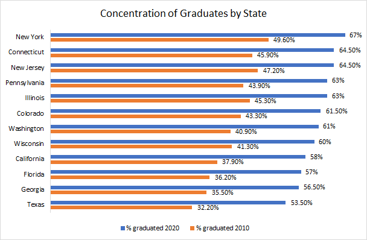

About me.
I am an aspiring Data Scientist who is currently working as a Data Consultant in Petaluma, California. I recently attained a B.S. in Statistics and Minor in Computer Science from University of California, Davis. My experience includes web scraping, data visualization, text mining, and statistical analysis. After my work contract terminates, I intend to get a position at a tech-based company to further build my Data Science portfolio.

Job Market: Searching for Jobs Relevant to Us
Quinn Cabral, Sophia Lee, Wade Lewis
Executive Summary
Hundred of thousands of recent graduates currently rely on job search engines like Indeed, Monster, and SimplyHired to kick start their careers. In 2018, however, 49% of U.S. undergraduate students are projected to be underemployed following their graduation. To address this conflict, our team developed the back end to a job-alert system as a way to recommend jobs that are similar to a given post. We found that topic modeling and a subsequent cluster analysis aided insight into underlying structures of our data, but these techniques were insufficient to create ‘useful’ job recommendations, so we suggest possible improvements. \nFurthermore, our team looked outside of our gathered dataset to look at subsets of the current job market. From this analysis, we identified California and Texas as the states with the greatest job availability for statistics majors, while eastern states such as New York and Connecticut had the highest-paying positions available for statistic majors.
Introduction
In this report, we aim to build a job recommender system, which would be used in the back-end of a job-alert system, a popular feature on these job search sites. Using data from Indeed, we were able to build a pipeline to gather job posts, build topic models on the content, and recommend jobs with similar content. We evaluated our job recommendation system by recommending similar Data Science jobs, and comparing that to indeed’s existing search, as well as ‘random noise’. In addition, we also conducted exploratory analysis outside of this dataset to get an idea of the recent job market for one looking for jobs in the statistics field.
Data Collection and Web Scraping
We scraped 19,029 job posts from Indeed.com, spread across 10 job searches in 10 locations, for an average of ~190 jobs per location/search combination. The data includes job titles, companies, locations, full job description, the proportions of the description that falls under different topics such as text that pertains to a data scientist topic, or text that contains job requirement content. The topics that proportions were calculated for were identified using Topic Modeling.
Topic Modeling
To recommend similar jobs, we needed to quantify the content of each job post; to achieve this, we turned to Topic Modeling. Topic modeling is a means of exploring unidentified structures within a set of documents. We want to develop a topic model to help us quantify the contents of each job by assigning a numeric vector describing the contents of the post. We used the topic model Latent Dirichlet Allocation (LDA) to identify unobserved topics within the data.
With these newly identified topics, we clustered the job posts. Later, we use these topics to recommend similar jobs.
Cluster Analysis
In our attempt of recommending job posts of similar content, we needed to cluster the job post data. Clustering is a type of exploratory analysis that allows researchers to identify subparts of the data as well as determine possible similarities and differences between clusters. We chose to cluster job postings using the topics previously identified during topic modeling and learn about how clusters with similar job postings differ in topics. To categorize job postings into clusters we used the k-means clustering algorithm. By utilizing the topic distributions to establish a centroid for each of the eight clusters, the algorithm assigned each job posting to a cluster based on similar topic proportions that had been previously calculated and saved into the topic dataset.
For each of the eight clusters, we calculated what proportions of a cluster contained each topic. If a job searcher chose a posting from this cluster of postings, they could also look to see job postings of similar words and content. With the help of word clouds we were able to see which words/content job postings of each cluster shared. We also looked to see which posts and job titles fell under each cluster.
Only fractions of the postings with the same title name were categorized into this cluster. For example, the second and third clusters both have the title “financial analyst” in their top 5 most frequent job titles, but the second cluster has only 21.96% of the job postings with that title while the third cluster has 57.65% of the job postings with the same title. This indicates that postings of the same title may not hold the same relevance in content. These results also showed that a cluster could have job titles that one would not categorize together, but were similar in content. For example, the fourth cluster consisted of job postings with the titles “ software engineer”, “data scientist”, “marketing analyst”, “business analyst”, “full stack engineer”. We would not have grouped these titles together, but our k-means cluster algorithm grouped posts with these titles together because of similarities in word content, showed in the word cloud below.

Clustering analysis provided us with a look into how our algorithm works in clustering similar job posts, but how does it compare to Indeed’s recommendations in postings?
Job Recommendation System Results: How our recommendations compare to Indeed
We utilized the kNN algorithm to attempt to build a reliable recommendation function to match similar jobs. Our intuition was that jobs with similar topic distributions would be similar enough to merit a recommendation. Below, we analyzed the effectiveness of recommending a Data Scientist job using this method. The post for which we are recommending new jobs contains a summary of contents as follows:
Given a Data Scientist position with the following characteristics:
- Equal Opportunity employer w/ benefits & 401k
- 2+ years experience with data analysis in R, Python, etc.
- Git, Agile Development, XML, JSON,
- Bachelor’s degree in Computer Science
We want to recommmend 50 similar jobs. We will compare our recommended jobs with Searched Jobs, and also with a random selection of jobs from our sample to see if our recommendations are just noise.
Visualizing the job titles:


Visualizing the Cluster analysis


It appears that our job recommendation system wasn't quite as good as we had hoped. It's difficult to distinguish noise from our recommendations.
Job Market by State
With our collected data from Indeed, we conducted some exploratory analysis on the job market. These results are specific to the job market during early April of 2018.
Our Indeed data consists of job postings for postions located across 12 states: New York, Connecticut, New Jersey, Pennsylvania, Illinois, Colorado, Washington, Wisconsin, California, Florida, Georgia, Texas. Out of these 12 states, we identified 6 that were strongly correlated with trends found in our cluster analysis. Therefore, in addition to gaining an understanding of the volume and content of the current job market, through this exploratory analysis we aimed to examine the relationships (if any) between these selected states and job clusters.
California: In addition to being our primary target state for UC Davis graduates, our exploratory analysis found that out of the 12 states we analyzed, California had the most job postings related to cluster 3, which is highly correlated with data analyst positions:
The 3rd custer is also highly correlated with job titles such as "data scientist", "data analyst", "senior data analyst", "business intelligence analyst", and "data engineer". Furthermore, as of June 2018, Indeed.com reported having roughly 13,000 data analyst job postings in California alone, with salaries ranging from $60,000 to $120,000. Out of those 13,000 positions, nearly 40% were located in urban cities such as San Francisco, Los Angeles, San Diego, San Jose, and Irvine. It is therefore no surprise that the top employers for this subset of California job postings were Google, Apple, Kaiser Permanente, Teradata, and California State University.
Texas: The observed proportion of clusters 3 through 6 linked the state of Texas with the career emphasis of knowledge engineer:
In addition to the 3rd cluster as previously discussed, the 6th cluster is highly correlated with job titles such as "software engineer", "software developer", "programmer analyst", "java developer", and "business analyst” In relation to the size and availability of jobs for statistic majors in California, Indeed identified over 11,000 knowledge engineer positions available in this large state. Of these 11,000 listed positions, over 60% reside in cities such as Austin, Houston, Dallas, and San Antonio. Similarly to Pennsylvania, the current average salary for data analyst related positions are roughly $59,000 in the state of Texas.
Connecticut: From extraction of job postings in Connecticut we found that the most common job postings seeking employers with a background in statistics included actuary positions, which are correlated with job cluster 2:

The top 5 job titles in cluster 2 include “financial analyst”, “business analyst”, “senior financial analyst”, “finance analyst”, and “pricing analyst”. In relation to insurance and financial services being the top industries in Connecticut, there was an abundance of postings for actuary and benefits analyst positions in cities such as Stamford and Hartford. The salary estimates for these particular positions in Connecticut range from $85,000 to $135,000, and are offered by institutions such as Prudential and Ezra Penland Actuarial Recruitment. Connecticut is therefore one of the highest-paid regions for static majors out of the states we analyzed.
New York: In the state of New York, financial services are the leading industry. In relation, our exploratory analysis shows that risk data analyst positions are correlated with the state of New York. In fact, 90% of New York’s risk data analyst job postings on Indeed are located in the city of New York where Wallstreet and the Financial District of lower Manhattan are located. Similarly to the results found in our job analysis of Connecticut, the salary range for these risk data analyst postings is $75,000 to $135,000.
Employee Market by State
Keeping the 12 states in mind, we addressed the issue of peer competition. Therefore, we used state-level data from the U.S. Department of Education to visualize the concentration and growth of college attainment by state:
From this visualization, we observed that eastern states such as New York, Connecticut, and New Jersey will have the highest concentration of college graduates by 2020. In contrast, while in 2010 Texas had the lowest concentration of college graduates out of these 12 states, by 2020 Texas is projected to have the highest growth of college graduation rates. Peer competition of UC Davis graduates therefore may be highest in states such as New York, Connecticut, New Jersey, and Texas, depending on the geographic movement and job preferences of graduates in these states.
Closing Statement
While our team had aimed to use clustering and topic modeling techniques to enhance the current recommendation systems used by popular job search engines such Indeed and Monster, we found that these techniques were best used for job market analysis. Furthermore, by modeling common job topics through word clouds and other statistical techniques, we were able to identify 8 job clusters from our Indeed data pull. We were then able to use these clusters to quantify and analyze the current job markets of 12 states, which we chose based on outside research that indicated that these areas had plentiful working opportunities for statistics majors. More specifically, we matched cluster patterns of job titles with cluster patterns of these states to determine which specific positions were most available to statistics majors in each state. From this analysis we found that while large states such California and Texas had high densities of available jobs to statistics majors, eastern states such as Connecticut and New York had the highest paying jobs available to statistics majors. Lastly, from analysis of our main Indeed csv file, we determined that %X, Y%, and %Z of these available jobs require a bachelor’s degree, master’s degree, and ph.D respectively. These statistical practices therefore helped us uncover the current state of the U.S. job market, and it is our hope that eager job seekers can use our analysis to guide and improve their current job searches.
References
Concentration of Graduates by State
https://www.ed.gov/news/press-releases/new-state-state-college-attainment-numbers-show-progress-toward-2020-goal
Gazarov, Petr. What is an API? In English, please. freeCodeCamp.
https://medium.freecodecamp.org/what-is-an-api-in-english-please-b880a3214a82
Glassdoor: Salaries and compensation
https://www.glassdoor.com/Salaries/index.htm
Indeed: Job Search
https://www.indeed.com
Latent Dirichlet allocation. Wikipedia.
https://en.wikipedia.org/wiki/Latent_Dirichlet_allocation
Martindale, Jon. The best job search sites. Digital Trends.
https://www.digitaltrends.com/web/best-job-search-sites/
Monster
https://www.monster.com/
Numbeo: Cost of Living
https://www.numbeo.com/cost-of-living/
Ray, Sunil. Beginner’s guide to Webscraping in Python (using Beautiful Soup). Analytics Vidhya.
https://www.analyticsvidhya.com/blog/2015/10/beginner-guide-web-scraping-beautiful-soup-python/
Trevino, Andrea. Introduction to K-means Clustering. Oracle + Data Science.
https://www.datascience.com/blog/k-means-clustering
Special thanks to Duncan Temple Lang and Nick Ulle